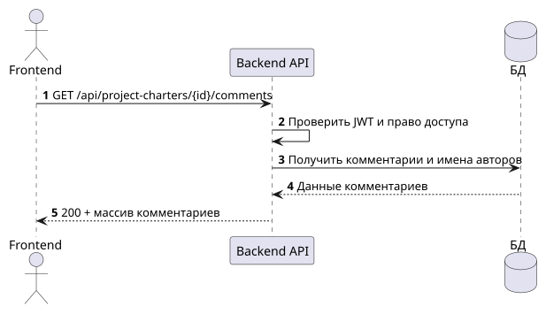

Возвращает комментарии обсуждения устава.
Доступ: право project_charter:access.
Используется в UC-8. Добавление комментария.
Схема работы


@startuml
autonumber
actor "Frontend" as FE
participant "Backend API" as API
database "БД" as DB
FE -> API : GET /api/project-charters/{id}/comments
API -> API : Проверить JWT и право доступа
API -> DB : Получить комментарии и имена авторов
DB --> API : Данные комментариев
API --> FE : 200 + массив комментариев
@endumlАлгоритм
Проверить право доступа и получить комментарии устава.
Отсортировать комментарии по дате создания, затем по идентификатору в порядке убывания.
Добавить имена авторов и вернуть массив комментариев без пагинации.
Входные параметры
Параметр пути (PATH). Тело запроса и QUERY-параметры отсутствуют.
Поле | Тип | Обязательно | Описание |
|---|---|---|---|
| integer | Да | Идентификатор устава |
Ответ
200 OK: возвращает массив комментариев устава.
Поля каждого элемента массива:
Поле | Тип | Описание |
|---|---|---|
| integer | Идентификатор комментария |
| integer | Идентификатор устава |
| string | Текст комментария |
| integer | Идентификатор автора |
| string, nullable | Имя автора |
| date-time | Дата и время создания комментария |
Если устав не найден или комментарии отсутствуют, система возвращает 200 OK с пустым массивом [].
Для добавления комментария используется POST /api/project-charters/{id}/comments.
Пример запроса
GET /api/project-charters/101/comments